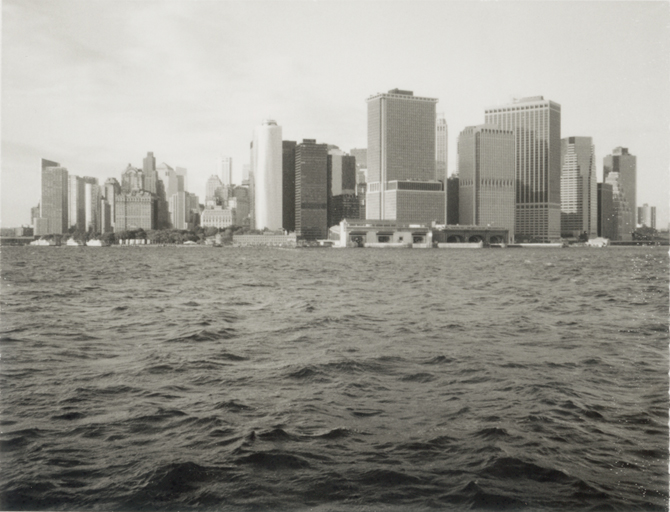
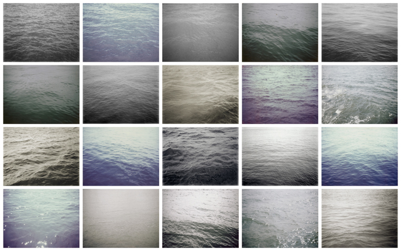
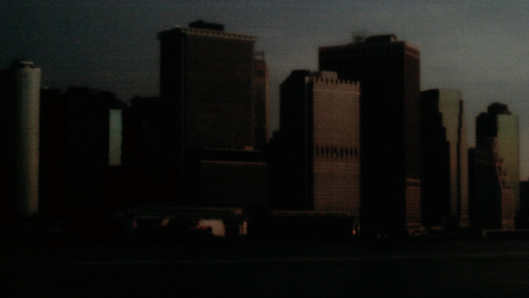
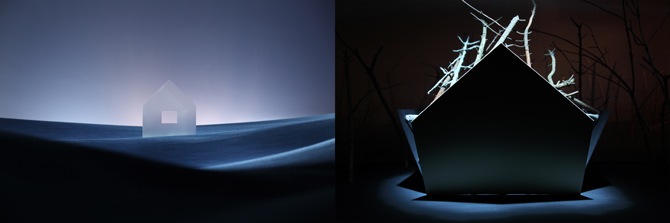
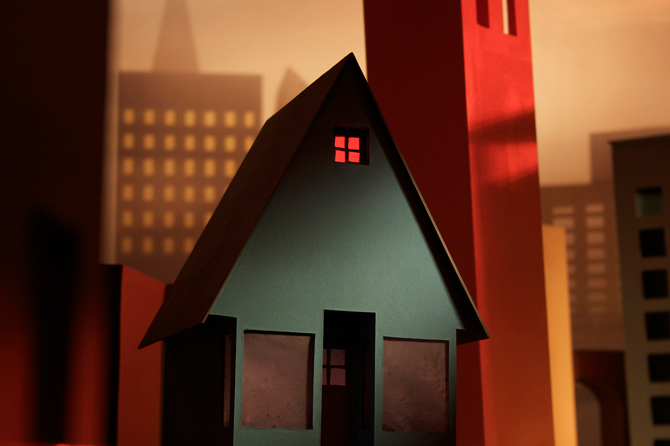

|
| |
Pace Digital Gallery is pleased to present Lee Arnold and Jonathan Ehrenberg
November 8th - December 2nd, 2011
opening reception and artists' talks, Nov 8th, 5 - 7pm

image: Twenty Views from Governors Island (detail), Polaroids, 26" x 18", 2010
Lee Arnold was born in London in 1972 and lives in Brooklyn. In his work he explores the nature of time and perception using a variety of media, including film, video, photography, drawing and sound. He has exhibited in the U.S. and abroad at venues including the Scope Art Fair in New York, the Institute of Contemporary Art in Philadelphia, and SIGGRAPH in Los Angeles and Hong Kong, and is the recipient of fellowships from the MacDowell Colony, the Lower Manhattan Cultural Council and the DAAD Berlin.
The work exhibited was made during a Lower Manhattan Cultural Council residency on Governors Island in the fall of 2010. "While on the island I became fascinated by iconic views of lower Manhattan, as well as the changing currents and tides of the waterways surrounding New York City. I wondered how the weather, the time of day, and the constantly shifting salinity levels of the water at the meeting place of the Atlantic and the Hudson affected the environment. I documented my impressions using a variety of media, both analog and digital, in an attempt to explore my shifting perceptions."
Lee Arnold's website  image: Water (Upper New York Bay), Polaroids, 26" x 18", 2010
 image: View from Governors Island, Time-Lapse pinhole photography, 3min 13sec, 2010
image: Seed, HD video, 6:52 minutes, 2010
Jonathan Ehrenberg’s videos feature surreal narratives, stylized characters, and sets that resemble three-dimensional, habitable paintings. Ehrenberg received a BA in Art Semiotics from Brown University, and an MFA in Painting from Yale. He has exhibited work at venues including MoMA PS1, Horton Gallery (NY), Earl McGrath Gallery (NY), Futura Center (Prague), and Espacio Minimo (Madrid), and is represented by Nicelle Beauchene Gallery in New York. His work has been reviewed in The New York Times, The New Yorker, Art in America, and The L Magazine, and he has participated in residencies at the Lower Manhattan Cultural Council, Harvestworks, Triangle Arts, the Fine Arts Work Center in Provincetown, and Skowhegan. Ehrenberg has taught at Parsons School of Design, Brown University, and Pace University, and he lives in New York City.
"In my videos, I layer rough materials like plaster, cloth, and cardboard to create a textured environment that resembles a three-dimensional, habitable painting. While my sets, characters, and plots feel surreal and stylized, they also have a sense of emotional truth. My goal is to bring viewers into an alternate world where logic and physical laws are suspended while depictions of emotion become vivid and honest. I want the story to feel real to the viewer in the way that a fantastic dream can feel real—on a visceral level. My projects are often inspired by literary sources--including Elizabeth Bishop, Nikolai Gogol and Japanese Folk tales--that portray a character's uneasy relationship to a world in flux.
In my videos, involuntary transformations and spatial distortions disorient the protagonists. One character begins losing pieces of himself and slowly takes on the qualities of a tree, another scales a building and is able to climb through the moon as though it were a hole in the sky. A house transforms into a forest or floats across the ocean. The natural world in these pieces functions as both an idyllic setting, and as a wild site of the unknown. To prepare the world of my videos, I work with watercolor, ink and collage, and this cross-pollination allows me to investigate a wide variety of characters, environments, and scenarios. I often arrange these individual pieces into large grids (akin to a storyboard), and this is how the video projects begin to take shape.
Jonathan Ehrenberg's website  image: Monument, Two-channel HD video, 1:00 minute, 2011
 image: Seed, HD video, 6:52 minutes, 2010